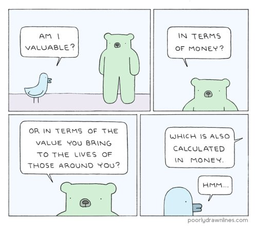

"How do you react when you believe the thought that if you had more money you’d be happier? You get to be unhappy now."
--Byron Katie
----------
"Everything happens for a reason. except when it doesn’t. But even then you can, in hindsight, fabricate a reason that will satisfy your belief system."
--Iain M. Banks
----------
"Since the Universe has no center, you can’t be it."
Neil deGrasse Tyson
--------------------
Today’s Tickler is brought to you by those in the, “I don’t have enough money” club.
Which includes you and pretty much everyone else. Very few people think they have enough money. Even the rich think they need more.
Meanwhile here I am retiring soon with not a lot of savings. Shouldn't I be churning with terror about the future, where’ surely I’ll be homeless on the streets with the ubiquitous shopping cart?
Maybe. But somehow I’m not.
Perhaps because my life has provided numerous opportunities to see, over and over, that whether money does or doesn’t come has nothing to do with me.
I mean, I've done everything right and money simply did not arrive. I've done absolutely nothing and somehow it rained cash.
The ways of income start to seem pretty darned arbitrary.
Money does what it wants.
Income is not tied to humans’ behaviors.
Just like enlightenment, just like happiness, just like sleep and health and ideas and life itself.
Okay, okay, I know you don’t believe this. I know you believe, along with everyone else, that income depends on you, and your right or wrong actions, and your hard, smart, work.
Even though there’s no promise, no guarantee, no straight or even crooked line going directly from effort to results. All you can do is put in energy and time and then hope it pays off.
Though if it’s not a given that you work hard and money surely follows, then it’s not provable that it was your efforts which brought the moola.
There might be some correlation, but not causation.
But never mind all that. You are the center point around which it all revolves. What you do. What you don’t do. What you deserve.
Because money must be earned. You have to deserve it. Like getting a divine pat on the head from the heavens for good behavior.
Sadly, when the head pat doesn't come, “I don’t have enough money,” quickly turns into, “I’m not enough, as a person,”
No-money thoughts invariably lead to "I AM" thoughts. “I am a failure, I am a loser, I am lazy, stupid, weak.”
As in, money and thoughts about it tell you who you are.
So that now it’s not just income that’s not enough, it’s you, as a person, also.
Which is your fault too. You you you.
Conveniently supporting the self’s misguided importance as center of the universe.
As if money could never come unexpectedly, on its own, deserved or not. Like breath, doing its own thing, also deserved or not.
I mean, wouldn’t it be a whole other experience if it turned out that income is not actually tied to your good behavior, value, worth?
Of course, I am aware you don’t believe this either; in fact you’re probably arguing right now, “Come on Judy, this is stupid, money can’t possibly come if I don’t work for it and make it.”
And maybe that’s true. But maybe it isn’t. I mean, right now I’m sitting here holding a lovely big check that came totally unexpectedly from my mortgage company, and new clients are coming out of the woodwork, without my trying, just as the time arrives to stop accepting them.
Even so, I’m not saying, “Don’t work. Don’t try to get more.”
It's just that your usual ways of thinking about money aren’t working.
So if only to reduce some of the terror about the future, if only to lighten some of the guilt, shame and self-disgust that comes with not having enough money- it might be time for something different.
Not enough money is hard enough. No need to pile on blame and mean name-calling on top.
So maybe you can start by noticing what it feels like to consider, “What if this money situation is not my fault? What if it’s a flow that has nothing to do with me?”
You don’t have to believe. It’s just a “What if?”
And then, maybe you could notice whether you're literally ok right now, with whatever money you have.
Staying present, just for a bit. Staying literal.
As opposed to imagining and planning for a future which never turns out the expected way anyway, no matter how much planning is done in advance.
You might also see if, even in the past when things seemed dire, you actually had enough and were ok back then too.
You may as well notice the enough-ness already present, even though “not enough” thoughts steal all the attention.
Because enough is what you want, after all, and it might be already here.
Which might feel better.
And then who knows- more money might show up. Or perhaps not.
Either option might not have anything to do with you.
And is it possible, even just a little, even just once in a while, to trust existence to take care of you,
Rather than having to shoulder the entire burden of absolutely everything that happens, yourself?
Separating self, identity, and your very worth as a person,
from what money does or doesn’t do.
Who knows? It could turn out to be an excellent start towards
being truly rich
Whether rolling in the bucks or not.
